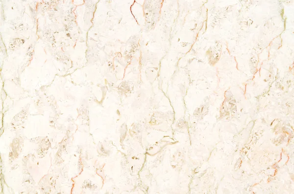
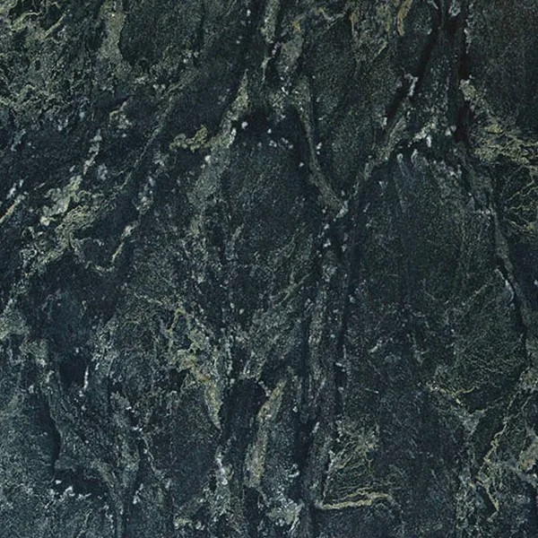
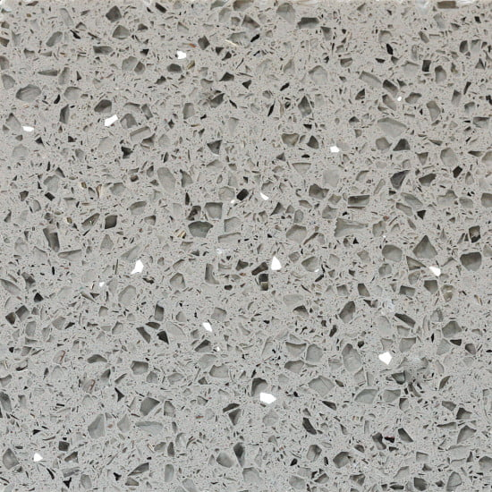
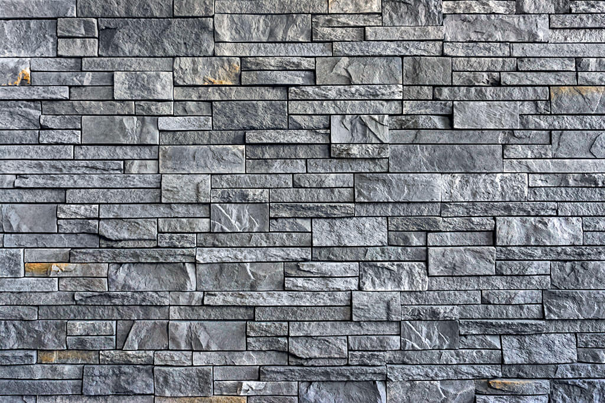

Mermer
Mermer je cenjen zbog svog bezvremenskog luksuznog izgleda, prirodnih šara i elegantne završne obrade. Idealan je za mermerni nameštaj, stepeništa, kamine, zidne panele i vrhunske enterijerske projekte.
Materijali

Mermer je cenjen zbog svog bezvremenskog luksuznog izgleda, prirodnih šara i elegantne završne obrade. Idealan je za mermerni nameštaj, stepeništa, kamine, zidne panele i vrhunske enterijerske projekte.

Granit pruža izuzetnu izdržljivost, otpornost na ogrebotine i snažan prirodni karakter. Često se koristi za radne ploče, podove i arhitektonske elemente gde je čvrstoća od ključnog značaja.

Kvarcne površine pružaju ujednačen izgled, sofisticiranu estetiku i lako održavanje. Idealne su za moderne kuhinje, kupatila i komercijalne enterijere.

Prirodni kamen obuhvata širok spektar premium površina koje se biraju zbog svoje teksture, jedinstvenosti i arhitektonskog karaktera. Pogodan je za luksuzni nameštaj, dekorativne elemente, zidne obloge i enterijere po meri.